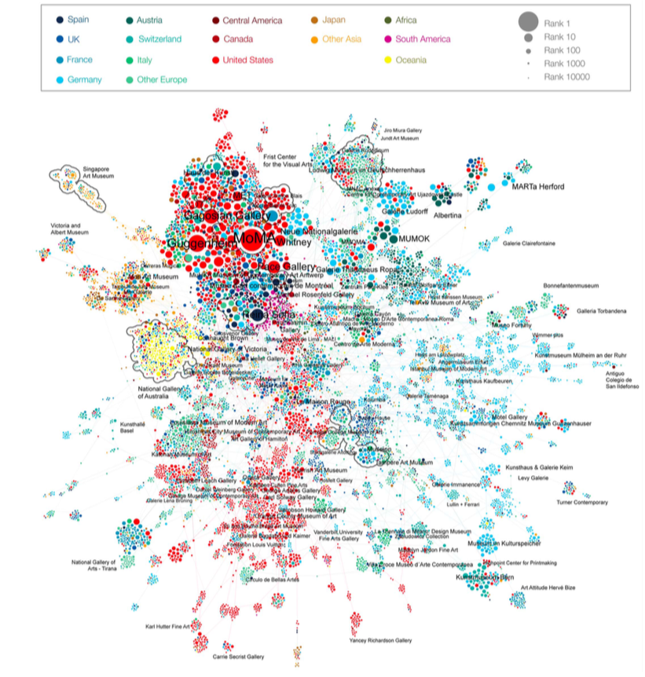
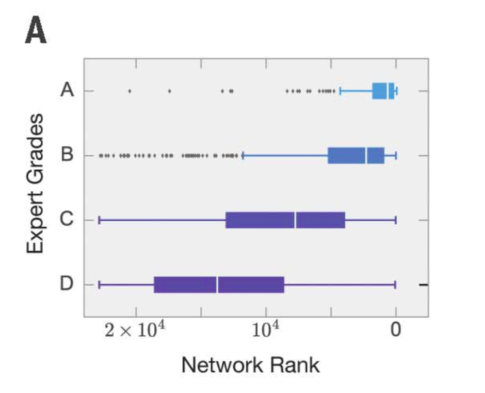
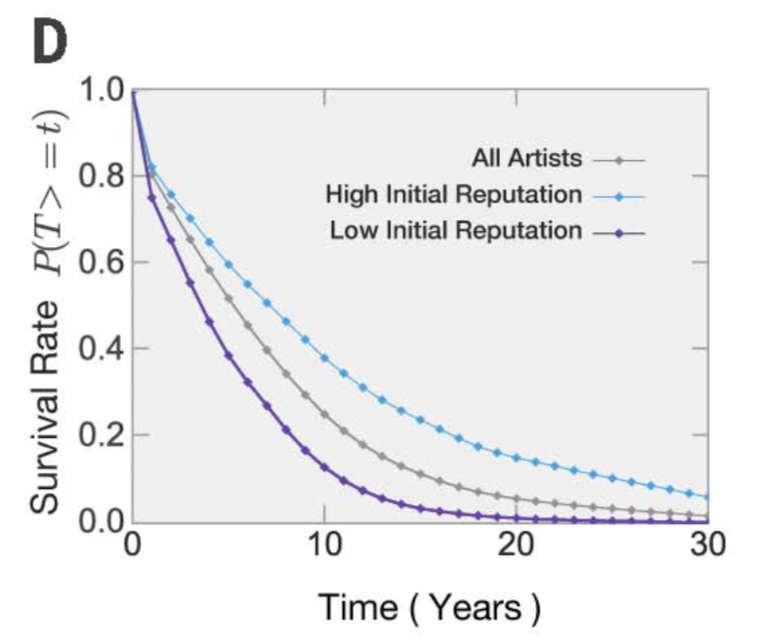
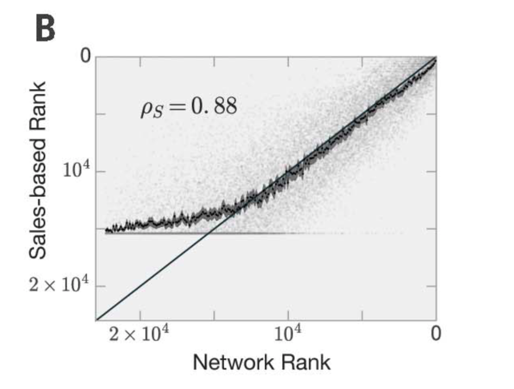
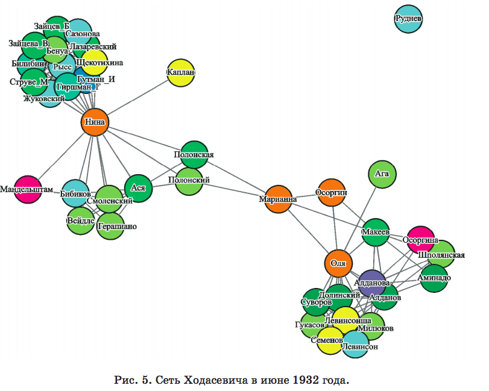

Статья в Science — показатель признания Digital Humanities научным сообществом. Эта работа посвящена измерению успеха художника через оценку «престижности» мест, где выставляются ее/его произведения. Престижность оценивается при помощи сетевого анализа. На основе данных о 767 473 выставках и 127 208 аукционах авторы строят сеть из 16002 галерей и 7568 музеев. Данные охватывают 143 страны, а по времени — 36 лет.
Связи между музеями в сети отражают интенсивность обмена художественными произведениями между ними. Ядро этой сети составили крупнейшие музеи США и Европы: «The network core was a dense community of major European and North American institutions, underlying their access to a common pool of artistic talents». Центральности музеев в сети коррелируют с экспертными оценками того, насколько они значимы и престижны:
Распределив таким образом музеи, авторы переходят к оценке карьерных траекторий. Оказывается, что вероятность успеха художника может быть предсказана на основе престижности мест, где проходили ее/его первые выставки. Так. через 10 лет после своей пятой выставки 39% тех творцов, чей путь начался в «престижном» музее или галерее (верхние 20%), продолжали выставляться. Для «непрестижных» художников (нижние 40% музеев и галерей по центральности в сети) этот показатель составил 14%.
Работы авторов, которые с самого начала выставлялись в престижных местах, продаются в среднем 4.7 раза чаще и стоят в 5.2 дороже, чем у тех, кто изначально оказался в непрестижных музеях и галереях.
Еще один показатель признания Digital Humanities — выход «цифровой» статьи в авторитетном филологическом журнале, издаваемом Пушкинским Домом. И снова сетевой анализ: на этот раз с его помощью исследуется сообщество русских эмигрантов-литераторов вокруг В. Ф. Ходасевича.
Источником построения сети служит «камер-фурьерский журнал» Ходасевича — краткие подневные записи за 17 лет его жизни за границей. Например, вот запись от 18 июля 1922 года: «18, втор.<ник>. К портному. К парикмахеру. / Шкловский. У Жени».
Измеряя центральности отдельных личностей в сети Ходасевича, авторы статьи делают интересные наблюдения о сообществе литераторов. Например, центральности некоторых друзей Ходасевича имеют отрицательную корреляцию друг с другом: когда повышается центральность одного (т.е. он становится более значимым звеном социальной сети), понижается центральность другого:
Показательно, что у А. Бахраха почти со всеми молодыми поэтами корреляция отрицательная <...>. Объясняется такое расхождение с младшими, во-первых, тем, что во второй половине 1930-х годов, когда молодые поэты активно проявляли себя, дружба Ходасевича и Бахраха «как-то сама собой истаяла», и Бахрах стал меньше появляться в жизни Ходасевича и, соответственно, в КФЖ. Важно при этом понимать, что когда Ходасевич все-таки общался и с младшими поэтами, и с Бахрахом, эти коммуникации не смешивались
Другое наблюдение из статьи показывает, как сетевой анализ может выявлять некоторых потенциально значимых участников сообщества, которые ранее оставались «в тени» и не считались сколько-нибудь важными:
В 1934—1936 годы в списке персон с самой высокой центральностью находится некто Оллиан (или «Ольян»), который, судя по КФЖ, часто бывал с Ходасевичем в литературных и семейных компаниях, а также играл с ним в карты. Аттестован он при этом в самом КФЖ довольно ругательно: «Ольян и другая сволочь» (25 марта 1935 года).
Случай с Ольяном весьма показателен. Ольян был женат на сестре Юрия Фельзена и занимался игрой на бирже и мелким предпринимательством. По-видимому, он воспринимался как чужой человек в литературном сообществе и именно поэтому так отрицательно охарактеризован в КФЖ. В доступных эмигрантских документах и источниках Ольян практически не фиксируется, между тем, наш анализ данных КФЖ демонстрирует, что этот человек был связан с большим числом людей. Вероятно, многие эмигранты предпочитали его не упоминать в силу его «чуждости» и «инаковости». Цифровая обработка КФЖ (сомневаться в статистических показателях у нас нет оснований) демонстрирует, что Ольян, несмотря на тенденцию эмигрантов исключать его персону из представлений о «своем круге», был вплетен в плотную сеть социальных транзакций и играл в эмигрантской среде значимую, хотя и не нагруженную в культурном или литературном плане роль».
Кроме сетевого анализа, в исследовании применяются и другие «цифровые подходы»: статистический анализ упоминаний людей, их сопоставление с имеющимися данными о статистике русской эмиграции; анализ интенсивности общения через подсчет количества встреч.
Why an age of machine learning needs the humanities — замечательно эссе Теда Андервуда о том, почему в эпоху Big Data гуманитарные науки и гуманитарное образование актуальны как никогда. Еще немного в сторону признания.
The Shape of Data in Digital Humanities: Modeling Texts and Text-based Resources — сборник под редакцией Джулии Фландерс (главный редактор Digital Humanities Quarterly, руководитель Women Writers Project) и Фотиса Яннидиса (главный DH-er в Германии). Авторы — сплошь звезды DH: Уиллард Маккарти, Тед Андервуд, Майкл Сперберг-Маккуин, Лу Барнард, Стивен Рамзи...
Еврокомиссия запустила открытый облачный сервис European Open Science Cloud (EOSC). EOSC должен стать универсальной средой для хранения, анализа и многократного использования открытых научных данных, главной точкой входа в европейские исследовательские инфраструктуры. Евросоюз выделил на проект 600 млн. евро, полностью он заработает в 2020 году.
На радио «Арзамас» — интервью с Александром Жолковским, незабытым предком и живым классиком. Интервью отчасти мемуарное, но и мемуарная часть там стоит прочтения. А рассуждения о литературе и точности в филологии — тем более.